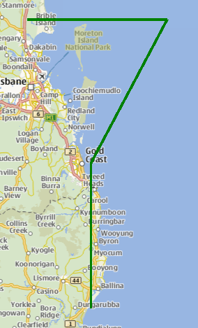

MapPolyline QML Type
The MapPolyline type displays a polyline on a map. More...
| Import Statement: | import QtLocation 6.6 |
| Since: | QtLocation 5.0 |
- List of all members, including inherited members
- MapPolyline is part of QML Maps Plugin.
Properties
- autoFadeIn : bool
- line
- line.color : color
- line.width : int
- path : list<coordinate>
- referenceSurface : enum
Methods
- void addCoordinate(coordinate)
- coordinate containsCoordinate(coordinate)
- coordinate coordinateAt(index)
- void insertCoordinate(index, coordinate)
- int pathLength()
- void removeCoordinate(coordinate)
- void removeCoordinate(index)
- void replaceCoordinate(index, coordinate)
- void setPath(geopath path)
Detailed Description
The MapPolyline type displays a polyline on a map, specified in terms of an ordered list of coordinates. The coordinates on the path cannot be directly changed after being added to the Polyline. Instead, copy the path into a var, modify the copy and reassign the copy back to the path.
var path = mapPolyline.path; path[0].latitude = 5; mapPolyline.path = path;
Coordinates can also be added and removed at any time using the addCoordinate and removeCoordinate methods.
By default, the polyline is displayed as a 1-pixel thick black line. This can be changed using the line.width and line.color properties.
Example Usage
The following snippet shows a MapPolyline with 4 points, making a shape like the top part of a "question mark" (?), near Brisbane, Australia. The line drawn is 3 pixels in width and green in color.
Map { MapPolyline { line.width: 3 line.color: 'green' path: [ { latitude: -27, longitude: 153.0 }, { latitude: -27, longitude: 154.1 }, { latitude: -28, longitude: 153.5 }, { latitude: -29, longitude: 153.5 } ] } }

Property Documentation
autoFadeIn : bool |
This property holds whether the item automatically fades in when zooming into the map starting from very low zoom levels. By default this is true. Setting this property to false causes the map item to always have the opacity specified with the QtQuick::Item::opacity property, which is 1.0 by default.
This property is part of the line property group. The line property group holds the width and color used to draw the line.
The width is in pixels and is independent of the zoom level of the map. The default values correspond to a black border with a width of 1 pixel.
For no line, use a width of 0 or a transparent color.
path : list<coordinate> |
This property holds the ordered list of coordinates which define the polyline.
[since 6.5] referenceSurface : enum |
This property determines the reference surface of the polyline. If it is set to QLocation::ReferenceSurface::Map the polylines vertices are connected with straight lines on the map. If it is set to QLocation::ReferenceSurface::Globe, the vertices are connected following the great circle path, describing the shortest connection of two points on a sphere. Default value is QLocation::ReferenceSurface::Map.
This property was introduced in Qt 6.5.
Method Documentation
void addCoordinate(coordinate) |
Adds the specified coordinate to the end of the path.
See also insertCoordinate, removeCoordinate, and path.
|
Returns true if the given coordinate is part of the path.
This method was introduced in QtLocation 5.6.
|
Gets the coordinate of the polyline at the given index. If the index is outside the path's bounds then an invalid coordinate is returned.
This method was introduced in QtLocation 5.6.
|
Inserts a coordinate to the path at the given index.
This method was introduced in QtLocation 5.6.
See also addCoordinate, removeCoordinate, and path.
|
Returns the number of coordinates of the polyline.
This method was introduced in QtLocation 5.6.
See also path.
void removeCoordinate(coordinate) |
Removes coordinate from the path. If there are multiple instances of the same coordinate, the one added last is removed.
If coordinate is not in the path this method does nothing.
See also addCoordinate, insertCoordinate, and path.
|
Removes a coordinate from the path at the given index.
If index is invalid then this method does nothing.
This method was introduced in QtLocation 5.6.
See also addCoordinate, insertCoordinate, and path.
|
Replaces the coordinate in the current path at the given index with the new coordinate.
This method was introduced in QtLocation 5.6.
See also addCoordinate, insertCoordinate, removeCoordinate, and path.